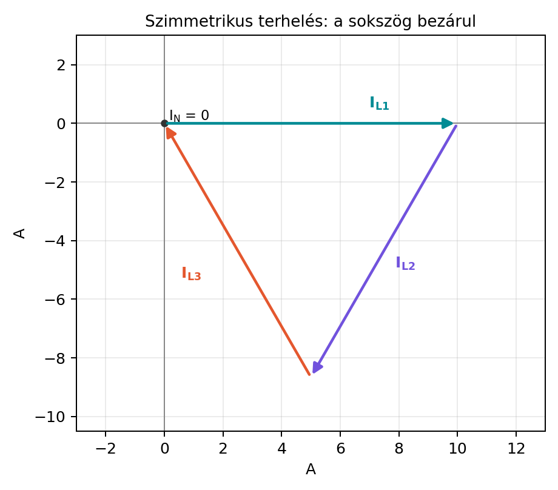
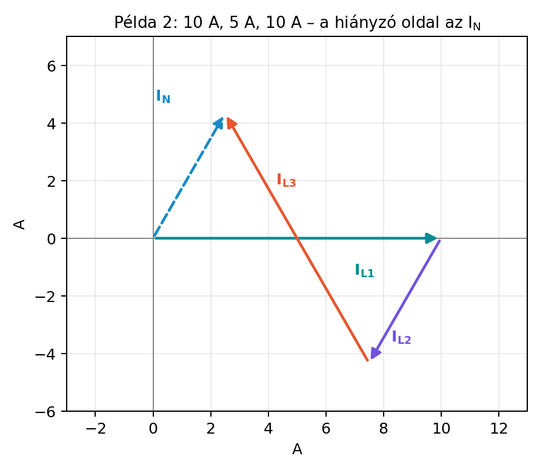
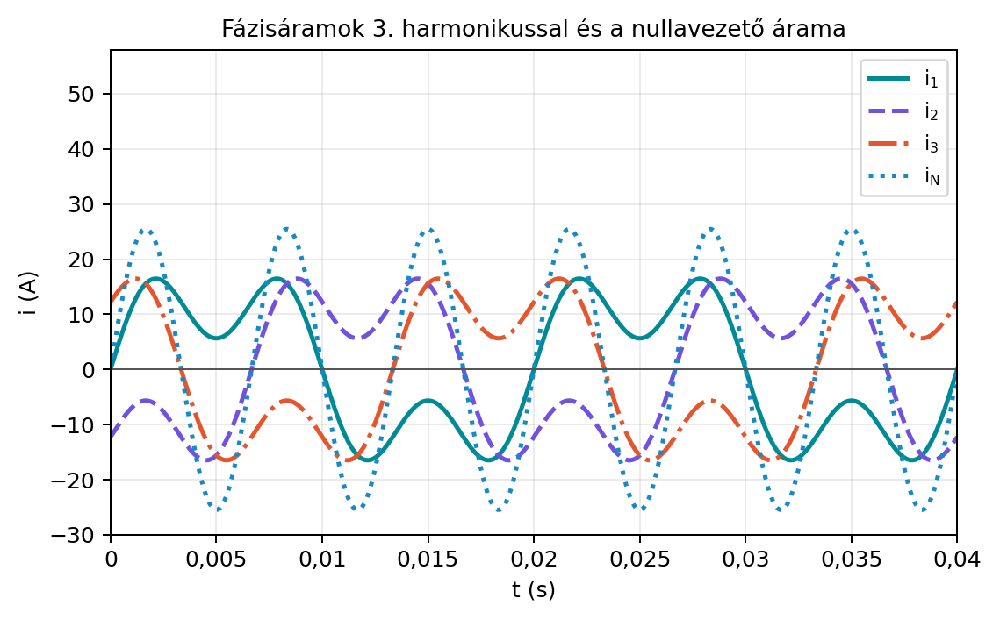

7.3 Háromfázisú teljesítmény,
aszimmetria és a nullavezető
A kapcsolódó elmélet: tankönyv, 7.3 alfejezet.
7.3.1 Kidolgozott példa 1:
háromfázisú motorteljesítmény
Egy háromfázisú aszinkronmotor adattábláján a következők szerepelnek:
,
,
.
Számítsuk ki a hatásos, látszólagos és meddő teljesítményt!
Megoldás.
A látszólagos teljesítmény:
A hatásos teljesítmény:
A
értéke:
A meddőteljesítmény:
Ellenőrzés. A teljesítmény-háromszög szerint
.
Bal oldal:
,
jobb oldal:
.
A kerekítési hibán belül egyezik.
Megjegyzés. A
a hálózatból felvett villamos hatásos teljesítmény, nem az adattáblán
szereplő leadott teljesítmény.
esetén a tengelyen leadott teljesítmény
(ellenőrizendő: adattábla).
7.3.2 Kidolgozott példa 2: a
nullavezető árama aszimmetrikus terhelésnél
Egy elosztóban – a Szemléletes kép kapcsolásán
(,
,
,
fázisfeszültség) – a fázisáramokat lakatfogóval megmérjük. Az értékek:
(fázisszög
),
(fázisszög
),
(fázisszög
).
A fogyasztók tisztán ohmosak, tehát az áramok fázisban vannak a
fázisfeszültségekkel. Számítsuk ki a nullavezető áramát!
Megoldás.
A nullavezető árama a fázisáramok fázorösszege:
Írjuk fel komplex alakban, a
-os
irányt az
feszültségéhez rögzítve:
Összegzés:
Az abszolút érték:
A nullavezetőben tehát 5 A folyik, annak ellenére,
hogy a legnagyobb fázisáram 10 A. Ez az aszimmetria következménye.
Kidolgozott példa 3 (aszimmetrikus delta). Két
fázisvezető közé kötött,
-os
fogyasztók (például hegesztőtranszformátor,
-os
fűtőtest) nem csillagban vannak, nincs nullavezetőjük. Adott (példaadat,
ohmos terhelés):
(L1–L2,
),
(L2–L3,
),
L3–L1 között nincs fogyasztó,
.
A fázisáramok:
(szöge
),
(szöge
).
A vonali áramok a csomóponti törvényből, fázorosan (a delta
áram-fázorábrája (tankönyv, 7.2) szerint):
,
nagysága
;
,
nagysága
;
,
nagysága
.
Az összes teljesítmény
;
a három vonali áram fázorösszege nulla, mert nincs nullavezető.
Tanulság: a közös L2 fázis terhelődik a legjobban – két
-os
fogyasztót lehetőleg ne ugyanarra a fázisra kössünk közösként. ∎
Ugyanez komplex számolás nélkül, szerkesztéssel is megkapható. A
fázorokat egymás végébe illesztjük (sokszög): az
végéből indítjuk az
-t,
annak végéből az
-at.
Ami az origóból a végpontig mutat, az az összeg, vagyis
.
Először a szimmetrikus esetet nézd meg:

Szimmetrikus terhelés: a sokszög bezárul
- 10 A, 10 A, 10 A: a fázorok összege nulla, I_N = 0. Az I_L2 (−120°) az
I_L1 végéből, az I_L3 (+120°) az I_L2 végéből indul, és pontosan az
origóba ér vissza.
A Kidolgozott példa 2 terhelésénél az
fázis árama csak
,
ezért a sokszög nem záródik:

Példa 2: 10 A, 5 A, 10 A – a hiányzó
oldal az I_N - I_N = 5 A, 60°-on; a hiányzó 5 A az L2 fázisból hiányzó
áram. Az I_L2 (5 A, −120°) az I_L1 végéből, az I_L3 (10 A, +120°) az
I_L2 végéből indul; a szaggatott I_N az origóból a végpontba (2,5; 4,33)
mutat.
Szerkesztéssel: a fázorokat egymás végébe
illesztjük; ami az origóból a végpontig mutat, az az
.
Méretarányos rajzon (pl.
)
a hossza vonalzóval, az iránya szögmérővel leolvasható – vizsgán is
elfogadott megoldási mód. Szimmetrikus terhelésnél a sokszög egyenlő
oldalú háromszöggé zárul, ezért ott
.
Szemléletes szabály: ha két fázis árama egyenlő, a
harmadiké kisebb (és mindhárom fogyasztó ohmos), akkor
éppen a különbség:
,
és a kisebb áramú fázis fázorával ellentétes irányba mutat (itt
).
A 4. feladat
(,
,
)
eredménye így fejben ellenőrizhető:
.
Induktív vagy vegyes terhelésnél, illetve három különböző áramnál a
szabály nem használható – ott szerkeszteni vagy komplexen számolni
kell.
7.3.3 Szimulátor és gyakorló:
aszimmetria és nullaszakadás
A következő ábra a fenti példa két állapotát mutatja: ép N mellett az
áramsokszöget, szakadt N mellett az eltolt csillagpontot. Admittanciával
írva a képlet
,
ahol
.
Statikus változat (mint a PDF-ben)
Aszimmetria és nullaszakadás: eltolt csillagpont szakadt N
mellett és az áramsokszög ép N mellett (2,3 kW / 460 W / 1,15
kW)
Mit próbálj ki? A HTML-kiadás szimulátorában a három
fázis teljesítménye csúszkával, a fogyasztó jellege (ohmos vagy
induktív) legördülő listával állítható. Kapcsold be az „N szakadt”
jelölőt, és csökkentsd az egyik fázis terhelését: figyeld meg, hogy
éppen a legkisebb teljesítményű fogyasztó kap egyre nagyobb
feszültséget, a 253 V feletti értéket a táblázat kiemeli. Állíts be
szimmetrikus terhelést: ekkor az N szakadása semmit nem változtat. A
„Gyakorló” fülön véletlen feladatok várnak négy szinten
(nullavezető-áram ohmos és induktív fázissal, fázisfeszültségek szakadt
N mellett, és döntés mért L–N feszültségekből: ép hálózat, N szakadt
vagy fázishiány). A rögzített feladatsor mind ohmos,
-os
fogyasztókkal készült; a kulcsban az
ép nullavezetőre, a
értékek szakadt nullavezetőre vonatkoznak.
Rögzített feladatsor. A HTML-kiadás gyakorlója
végtelen sok hasonló feladatot ad; az alábbi sor rögzített, a
megoldókulcs a végén található.
(C) 230/400 V-os hálózat, ohmos fogyasztók – L1:
2,3 kW ohmos; L2: 2,3 kW ohmos; L3: 2,3 kW ohmos. Mekkora a nullavezető
árama ép N mellett, és mekkora feszültséget kapnak a fogyasztók, ha a
nullavezető megszakad?
(C) 230/400 V-os hálózat, ohmos fogyasztók – L1:
2,3 kW ohmos; L2: 1,15 kW ohmos; L3: nincs terhelés. Mekkora a
nullavezető árama ép N mellett, és mekkora feszültséget kapnak a
fogyasztók, ha a nullavezető megszakad?
(C) 230/400 V-os hálózat, ohmos fogyasztók – L1: 3
kW ohmos; L2: 500 W ohmos; L3: 500 W ohmos. Mekkora a nullavezető árama
ép N mellett, és mekkora feszültséget kapnak a fogyasztók, ha a
nullavezető megszakad?
(C) 230/400 V-os hálózat, ohmos fogyasztók – L1:
460 W ohmos; L2: 460 W ohmos; L3: 2,3 kW ohmos. Mekkora a nullavezető
árama ép N mellett, és mekkora feszültséget kapnak a fogyasztók, ha a
nullavezető megszakad?
(C) 230/400 V-os hálózat, ohmos fogyasztók – L1:
1,5 kW ohmos; L2: 1,5 kW ohmos; L3: 500 W ohmos. Mekkora a nullavezető
árama ép N mellett, és mekkora feszültséget kapnak a fogyasztók, ha a
nullavezető megszakad?
(C) 230/400 V-os hálózat, ohmos fogyasztók – L1: 2
kW ohmos; L2: nincs terhelés; L3: nincs terhelés. Mekkora a nullavezető
árama ép N mellett, és mekkora feszültséget kapnak a fogyasztók, ha a
nullavezető megszakad?
Megoldókulcs.
A rögzített feladatsor megoldókulcsa
Feladat
Szint
Eredmény
1.
C
IN = 0 A; U1’ = 230 V; U2’ = 230 V;
U3’ = 230 V
2.
C
IN = 8,66 A; U1’ = 132,8 V; U2’ =
265,6 V
3.
C
IN = 10,9 A; U1’ = 86,25 V; U2’ =
326,5 V; U3’ = 326,5 V
4.
C
IN = 8 A; U1’ = 316,9 V; U2’ =
316,9 V; U3’ = 98,57 V
5.
C
IN = 4,35 A; U1’ = 205,2 V; U2’ =
205,2 V; U3’ = 295,7 V
6.
C
IN = 8,7 A; U1’ = 0 V
Kidolgozott megoldások.
L1: I = P / U = 2300 W / 230 V = 10 A, fázisban a
fázisfeszültséggel: I = 10 + j0 A.
L2: I = P / U = 2300 W / 230 V = 10 A, fázisban a fázisfeszültséggel: I
= −5 − j8,66 A.
L3: I = P / U = 2300 W / 230 V = 10 A, fázisban a fázisfeszültséggel: I
= −5 + j8,66 A.
IN = I1 + I2 + I3
(fázorosan) = 0 + j0 A, nagysága 0 A.
N szakadása után a csillagpont eltolódik (Millman): UN’N =
ΣUk·Yk / ΣYk = 0 + j0 V, nagysága 0
V.
L1: U’ = |U1 − UN’N| = 230 V.
L2: U’ = |U2 − UN’N| = 230 V.
L3: U’ = |U3 − UN’N| = 230 V.
L1: I = P / U = 2300 W / 230 V = 10 A, fázisban a
fázisfeszültséggel: I = 10 + j0 A.
L2: I = P / U = 1150 W / 230 V = 5 A, fázisban a fázisfeszültséggel: I =
−2,5 − j4,33 A.
L3: I = P / U = 0 W / 230 V = 0 A, fázisban a fázisfeszültséggel: I = 0
+ j0 A.
IN = I1 + I2 + I3
(fázorosan) = 7,5 − j4,33 A, nagysága 8,66 A.
N szakadása után a csillagpont eltolódik (Millman): UN’N =
ΣUk·Yk / ΣYk = 115 − j66,4 V, nagysága
132,8 V.
L1: U’ = |U1 − UN’N| = 132,8 V – feszültséghiány
(< 207 V).
L2: U’ = |U2 − UN’N| = 265,6 V – túlfeszültség
(> 253 V)!
L3: nincs fogyasztó, a fázison nem folyik áram.
L1: I = P / U = 3000 W / 230 V = 13 A, fázisban a
fázisfeszültséggel: I = 13,04 + j0 A.
L2: I = P / U = 500 W / 230 V = 2,17 A, fázisban a fázisfeszültséggel: I
= −1,087 − j1,883 A.
L3: I = P / U = 500 W / 230 V = 2,17 A, fázisban a fázisfeszültséggel: I
= −1,087 + j1,883 A.
IN = I1 + I2 + I3
(fázorosan) = 10,87 + j0 A, nagysága 10,9 A.
N szakadása után a csillagpont eltolódik (Millman): UN’N =
ΣUk·Yk / ΣYk = 143,8 + j0 V, nagysága
143,8 V.
L1: U’ = |U1 − UN’N| = 86,25 V – feszültséghiány
(< 207 V).
L2: U’ = |U2 − UN’N| = 326,5 V – túlfeszültség
(> 253 V)!
L3: U’ = |U3 − UN’N| = 326,5 V – túlfeszültség
(> 253 V)!
L1: I = P / U = 460 W / 230 V = 2 A, fázisban a fázisfeszültséggel:
I = 2 + j0 A.
L2: I = P / U = 460 W / 230 V = 2 A, fázisban a fázisfeszültséggel: I =
−1 − j1,732 A.
L3: I = P / U = 2300 W / 230 V = 10 A, fázisban a fázisfeszültséggel: I
= −5 + j8,66 A.
IN = I1 + I2 + I3
(fázorosan) = −4 + j6,928 A, nagysága 8 A.
N szakadása után a csillagpont eltolódik (Millman): UN’N =
ΣUk·Yk / ΣYk = −65,71 + j113,8 V,
nagysága 131,4 V.
L1: U’ = |U1 − UN’N| = 316,9 V – túlfeszültség
(> 253 V)!
L2: U’ = |U2 − UN’N| = 316,9 V – túlfeszültség
(> 253 V)!
L3: U’ = |U3 − UN’N| = 98,57 V – feszültséghiány
(< 207 V).
L1: I = P / U = 1500 W / 230 V = 6,52 A, fázisban a
fázisfeszültséggel: I = 6,522 + j0 A.
L2: I = P / U = 1500 W / 230 V = 6,52 A, fázisban a fázisfeszültséggel:
I = −3,261 − j5,648 A.
L3: I = P / U = 500 W / 230 V = 2,17 A, fázisban a fázisfeszültséggel: I
= −1,087 + j1,883 A.
IN = I1 + I2 + I3
(fázorosan) = 2,174 − j3,765 A, nagysága 4,35 A.
N szakadása után a csillagpont eltolódik (Millman): UN’N =
ΣUk·Yk / ΣYk = 32,86 − j56,91 V,
nagysága 65,71 V.
L1: U’ = |U1 − UN’N| = 205,2 V – feszültséghiány
(< 207 V).
L2: U’ = |U2 − UN’N| = 205,2 V – feszültséghiány
(< 207 V).
L3: U’ = |U3 − UN’N| = 295,7 V – túlfeszültség
(> 253 V)!
L1: I = P / U = 2000 W / 230 V = 8,7 A, fázisban a
fázisfeszültséggel: I = 8,696 + j0 A.
L2: I = P / U = 0 W / 230 V = 0 A, fázisban a fázisfeszültséggel: I = 0
+ j0 A.
L3: I = P / U = 0 W / 230 V = 0 A, fázisban a fázisfeszültséggel: I = 0
+ j0 A.
IN = I1 + I2 + I3
(fázorosan) = 8,696 + j0 A, nagysága 8,7 A.
N szakadása után a csillagpont eltolódik (Millman): UN’N =
ΣUk·Yk / ΣYk = 230 + j0 V, nagysága 230
V.
L1: U’ = |U1 − UN’N| = 0 V – feszültséghiány (<
207 V).
L2: nincs fogyasztó, a fázison nem folyik áram.
L3: nincs fogyasztó, a fázison nem folyik áram.
7.3.4 Önellenőrzés
Igaz vagy hamis? Szimmetrikus háromfázisú
terhelésnél a nullavezetőben nem folyik áram.
Számítás. Mekkora a hatásos teljesítmény, ha
,
,
?
Miért tilos biztosítékot tenni a
nullavezetőbe?
Milyen felharmonikusok adódnak össze a
nullavezetőben?
Egy aszimmetrikus csillag kapcsolásban a nullavezető
szakadása után az egyik fázis feszültsége 40 V-ra csökken. Milyen
feszültség jelenik meg a másik fázison, ha a harmadik fázis terheletlen,
és mindkét fogyasztó tisztán ohmos?
Számítás. Szimmetrikus, nemlineáris terhelésnél
fázisonként
alapharmonikus és
harmadik harmonikus folyik. Mekkora a nullavezető árama?
1. feladat (A) Definiáld a szimmetrikus háromfázisú
terhelést!
2. feladat (A) Számítsd ki a látszólagos
teljesítményt, ha
és
!
3. feladat (B) Egy háromfázisú motor adatai:
,
,
.
Számítsd ki a hatásos, meddő és látszólagos teljesítményt!
4. feladat (B) Egy mérés során a fázisáramok:
(),
(),
().
Számítsd ki a nullavezető áramát!
5. feladat (C) Nullavezető-szakadás esetén az
fázisra
,
az
fázisra
van kötve, az
fázis terheletlen. Mekkora feszültség jelenik meg az egyes
ellenállásokon?
6. feladat (D) Gyakorlati hibakeresés. Egy
lakáselosztóban a következő feszültségeket méred:
–:
260 V,
–:
200 V,
–:
230 V. Mi lehet a hiba? Mit ellenőriznél először?
Első kiosztás: L1: sütő, mosogatógép, bojler, világítás, egy
aljzatkör; L2: mosógép, klíma, egy aljzatkör; L3: egy aljzatkör.
Számítsd ki a fázisáramokat és az
-t!
Készíts jobb kiosztást úgy, hogy a mosógép és a mosogatógép, illetve
a sütő és a bojler ne kerüljön azonos fázisra; számítsd ki újra az
áramokat és az eltérést!
Melyik kiosztásnál old le előbb egy
-es
főbiztosító?
8. feladat (C) Egy csillagpontos fogyasztócsoport
teljesítménye: L1: 1000 W, L2: 2000 W, L3: 3000 W (ohmos, 230 V-ra
tervezve;
,
,
).
Mekkora a nullavezető árama ép N mellett? Szakadt N esetén mekkora a
csillagpont-eltolódás és a három fogyasztói feszültség?
9. feladat (D) Egy háromfázisú vízmelegítő
(,
csillag, nullavezető nélkül) lassan melegít. A lakatfogó L1-ben 7,6 A-t,
L2-ben 0 A-t, L3-ban 7,6 A-t mér. Mi a hiba, mekkora a leadott
teljesítmény, és mit teszel?
7.3.6 Megoldások
Önellenőrzés – válaszok
Igaz. A három azonos nagyságú, egymástól 120°-kal
eltolt fázor összege nulla.
.
Mert ha a biztosíték kiolvad, a nullavezető megszakad, ami
aszimmetrikus terhelésnél túlfeszültséget okozhat a fogyasztókon.
A 3. harmonikus és annak páratlan többszörösei (3., 9., 15.
stb.).
Ohmos fogyasztóknál a két feszültség fázisban van, ezért összegük a
400 V-os vonali feszültség; a másik fázis feszültsége
.
Az alapharmonikusok kioltják egymást, a harmadik harmonikusok
összeadódnak:
(a
nem számít bele). A fázisáram effektív értéke közben
.
1. feladat (A)
Szimmetrikus háromfázisú terhelésnél mindhárom fázisban az impedancia
nagysága és fázisszöge azonos, ezért a fázisáramok azonos nagyságúak és
egymástól 120°-kal eltoltak.
2. feladat (A)
.
3. feladat (B)
.
.
,
így
.
4. feladat (B)
Komplexben:
,
,
.
Összeg:
.
Abszolút érték:
.
A nullavezetőben 6 A folyik.
5. feladat (C)
A két ellenállás sorba kapcsolódik
és
közé, a vonali feszültség 400 V. Az áram:
.
,
.
A 150 Ω-os fogyasztó normál esetben 230 V-ot kapna, most 300 V-ot kap,
ami túlfeszültség.
6. feladat (D)
A mért feszültségek arra utalnak, hogy a nullavezető megszakadt vagy
nagy átmeneti ellenállású csatlakozása van. A szerelő először a
nullavezető folytonosságát ellenőrizné a mérőhely és az elosztó között,
valamint a nulla sorkapcsok meghúzását. A hiba jellemzően a nulla
csatlakozó meglazulása vagy oxidációja.
7. feladat (C)
Az
ohmos terhelésnél a
,
,
irányú áramok fázorösszege (a 4. feladat módszerével): vízszintes
összetevő
,
függőleges
.
Egy jó megoldás: L1: sütő + két aljzatkör (5,0 kW); L2: mosogatógép
+ bojler + világítás (4,8 kW); L3: mosógép + klíma + egy aljzatkör (4,4
kW). Áramok: 21,7 / 20,9 / 19,1 A;
;
a legnagyobb és a legkisebb fázisáram eltérése a legnagyobbhoz képest
kb. 12 %.
Az elsőnél:
,
tehát az L1 biztosítója old le (az idő a jelleggörbétől függ); a második
kiosztásnál minden fázis
alatt marad.
9. feladat (D)
L2 fázishiány (a fázisáram 0 A, a másik kettő egyforma és az ép
-nél
kisebb): a két megmaradt betét sorosan 400 V-on, egyenként 200 V-ot kap,
,
az ép érték fele. Teendő: a készüléket lekapcsolni, az öt biztonsági
szabály szerint feszültségmentesíteni, majd jogosult személy vizsgálja
az L2 előtti biztosítót, kismegszakítót, kötéseket és az eret, illetve a
fűtőbetét-csatlakozást; javítás után mindhárom fázisáramot ellenőrizni
kell.
7.3.7 Nullavezető-szakadás
következményei – példák és gyakorlók
Számítási példa. Tegyük fel, hogy az
fázisra
,
az
fázisra
ellenállású fogyasztó van kötve, az
fázis terheletlen. Normál működésben mindkét ellenállásra a
fázisfeszültség
jut.
Ha a nullavezető megszakad, a két ellenállás sorosan
kapcsolódik
és
közé, így a vonali feszültség
oszlik meg rajtuk. Az áram:
A feszültségek:
A
-os
fogyasztó normál esetben 230 V-ot kapna, most viszont 360 V-ot, ami
túlfeszültség, és tönkreteheti a készüléket. A kisebb
ellenállású fogyasztó pedig csak 40 V-ot kap, tehát alacsony feszültség
miatt nem működik.
Ép nullavezetővel:
,
,
,
a nullavezető árama (fázorosan)
.
Szakadt nullavezetővel: a számlálóban
,
,
V. Az eredmény
,
nagysága
,
szöge kb.
.
A fogyasztók feszültsége: L1:
;
L2:
;
L3:
.
Az áramok:
,
,
;
fázorösszegük nulla, mert nincs nullavezető.
7.3.8 Harmonikusok hatása a
nullavezetőre – példák és gyakorlók
Számítási példa: harmadik harmonikus a
nullavezetőben. Mindhárom fázisban
alapharmonikus (50 Hz) és
harmadik harmonikus (150 Hz) folyik (effektív értékek; szimmetrikus,
nemlineáris terhelés, pl. LED-tápegységek). A fázisáram effektív értéke
a két összetevő négyzetes összege:
A nullavezetőben az alapharmonikusok – mint a szimmetrikus
terhelésnél – kioltják egymást. A harmadik harmonikusok viszont azonos
fázisúak: a
-os
eltolás a háromszoros frekvencián
,
vagyis nulla eltolás. Ezért egyszerűen összeadódnak:
A nullavezetőben tehát másfélszer akkora áram folyik, mint bármelyik
fázisvezetőben, és ezt egyetlen kismegszakító sem „látja”, mert a
fázisvezetők árama nem nagyobb a szokásosnál. Azonos keresztmetszetű
N-vezető így jobban melegszik, mint a fázisvezető; ilyen terhelésnél a
nullavezető nem csökkenthető (lásd a 3. tipikus hibát és a
Terhelhetőség, melegedés és javítótényezők (tankönyv, 10.3)
alfejezetet). Az időfüggvényeken látszik, hogyan adódik össze a három
150 Hz-es összetevő:

Fázisáramok 3. harmonikussal és a
nullavezető árama - Szemléltető, számított: 10 A + 6 A (3. harmonikus)
fázisonként; I_N = 18 A, 150 Hz. i_1 = 14,14·sin(ωt) + 8,49·sin(3ωt);
i_2 és i_3 alapharmonikusa −120°, ill. +120°-kal eltolt, a 3. harmonikus
mindháromban azonos fázisú; i_N = i_1 + i_2 + i_3 =
25,46·sin(3ωt).
Olvasd le az ábráról: a pontvonalas
görbe periódusideje harmada a fázisáramokénak
(
a
helyett), csúcsértéke
()
pedig nagyobb bármelyik fázisáram csúcsánál. Mérési
következmény: ha egy irodai elosztóban a nullavezető áramát
lakatfogóval méred, közel szimmetrikus fázisterhelésnél is jelentős
áramot találhatsz. Ezt csak valódi effektív értéket mérő (TRMS)
lakatfogó méri helyesen; a középértéket mérő, szinuszra kalibrált műszer
torz áramnál hibásan mutat (lásd Multiméter, lakatfogó és mérési
kategóriák (tankönyv, 8.2)).